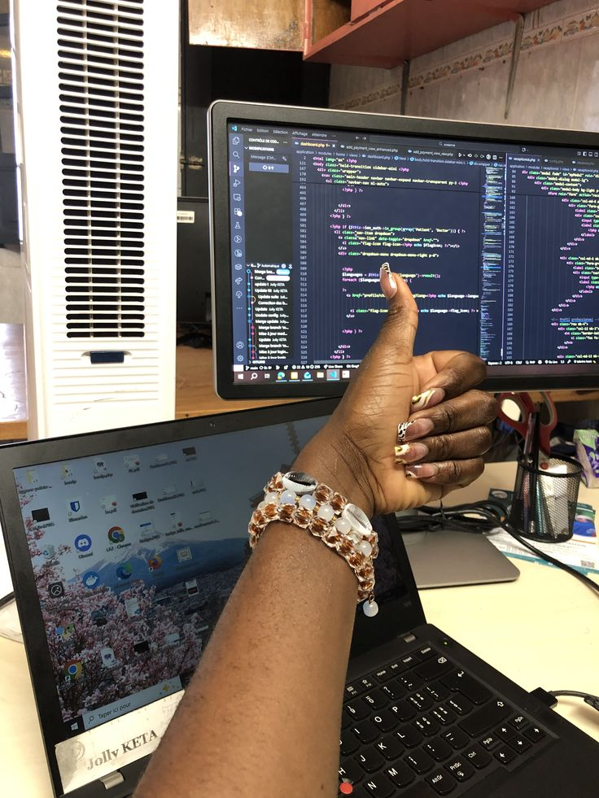

Looking ahead, I aspire to grow into a well‑rounded software developer who blends technical expertise with creativity. In the short term, my goal is to secure internships that allow me to apply my skills in real‑world projects and learn from industry mentors. Long term, I dream of contributing to innovative solutions that make technology more accessible and impactful, while continuing to nurture my entrepreneurial ventures. Beyond career milestones, I envision a future where my work inspires others to embrace curiosity, creativity, and resilience in their own journeys.
Technology & Innovation
I envision a future where technology is not just a tool, but a bridge to innovation — creating solutions that simplify lives, empower communities, and inspire progress.
Inspiration & Impact
I aspire to use my skills and creativity to inspire others — showing that technology and artistry can work hand in hand to create meaningful change. My dream is to leave a lasting impact by building solutions that not only solve problems but also spark curiosity, empower communities, and encourage others to pursue their own passions.
Growth, Journey & Creativity/Balance
My path is a blend of growth and creativity — a journey shaped by resilience, curiosity, and balance. I aspire to harmonize technical expertise with artistic expression, building a career that values both innovation and human connection. .